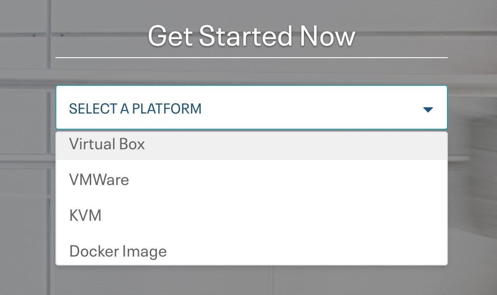
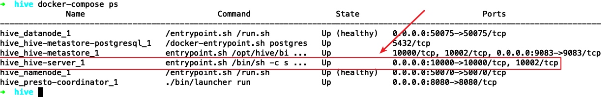
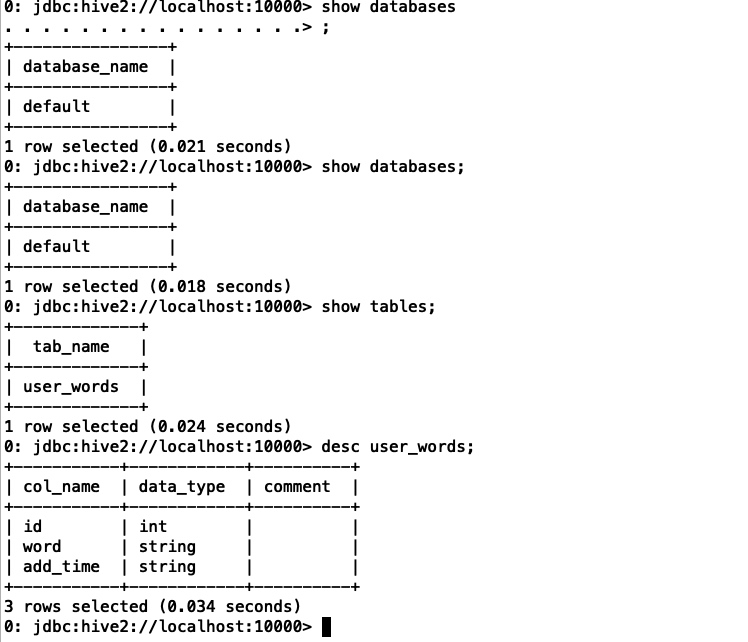
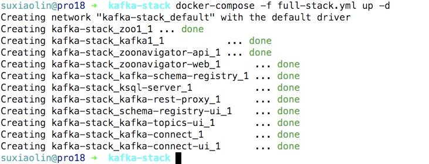

三分钟搭建大数据sql开发平台
目前工作内容中包含比较多的sql需求，但是公司目前的sql开发平台hue系统最近越来越慢了，一般在开发过程中会验证一些小sql是否符合预期，某些大sql也可能会拆成数个/数十个子sql进行分步验证，如果每个小sql需要等待数分钟才能查看结果，无疑会导致sql开发效率变得低下
所以在本地搭建一个大数据sql开发平台就十分必要了
cloudera公司提供了方便的一键启动的虚拟机，参考：https://www.cloudera.com/downloads/quickstart_vms/5-13.html

平时一般使用vmware虚拟机，这里就用vmware举例了，可以看到cloudera官方还支持virtual box, kvm, docker image等虚拟机系统，可以自行选择
获取hue虚拟机

单击"GET IT NOW"，然后填一个问卷单就可以下载了，下载完成后可以检查下文件大小，约5.76GB是下载ok的
三分钟上手linux系统开发
linux系统编程，主要使用c语言，c++是c的超集，也是可以的
完整项目代码已上传github：https://github.com/neatlife/my-tlpi-book
获取可用环境
可以使用虚拟机安装一个linux系统进行linux系统开发，虽然mac os和linux非常相似，但是和linux还是有很多小区别的，装虚拟机是最省事的
这里使用elementary os，下载地址参考：https://elementary.io/zh_CN/
安装时，选linux 4.x以上的内核版本即可

三分钟上手hive进行数据统计
最近操作了hive进行数据统计，使用下面总结的步骤可以快速上手这个数据库
完整案例代码已上传github: https://github.com/neatlife-learn/myhive
获取可用的hive实例
可以使用docker一键启动参考：https://github.com/big-data-europe/docker-hive
git clone https://github.com/big-data-europe/docker-hive.git hive
cd hive
docker-compose pull
docker-compose up -d
执行docker-compose ps查看启动效果

可以看到hive-server已经成功启动并在10000端口监听了
然后可以使用命令: docker-compose exec hive-server /opt/hive/bin/beeline -u jdbc:hive2://localhost:10000
进入hive命令行终端进行操作了，常见的sql语句一般都支持，比如show databases show tables desc tableName等，操作效果如下：

使用sqoop导入mysql数据到hive
准备测试数据
在mysql中准备需要导入hive的数据，可以自行生成，这里使用已经存在的user_words表，内容如下

三分钟上手scikit-learn机器学习算法库
公司在使用这个库做某个项目的机器学习子项目，用于商品补货预测的机器学习应用，了解了下，发现这个库虽然不支持分布式并行运行，但是有spotify、evernote等公司在背书使用，应该还是可以，可以了解下
完整代码已上传github：https://github.com/neatlife/mypiclabel
安装依赖库
requirements.txt如下
scikit-learn==0.21.2
然后执行pip install -r requirements.txt
导入依赖库
三分钟上手apache顶级任务编排系统airflow
airflow已经成为了任务编排系统的事实标准，使用和terraform一样的代码及配置的任务开发方式。
airflow使用python作为开发语言，非常简单易学、容易上手。
完整案例代码已上传github：https://github.com/neatlife/myairflow
获取airflow实例
可以使用docker一键启动
git clone https://github.com/puckel/docker-airflow
cd docker-airflow
docker-compose -f docker-compose-LocalExecutor.yml up -d
访问ip:8080查看效果

可以看到airflow已经可用了
编辑dag文件
这个dag文件就是用来定义任务和任务之间的先后、依赖关系的。
在spring boot三分钟上手无界流处理系统Spark Streaming，并实现流式点赞统计
在页面上每次点赞，把这个被点赞的文章id发送到kafka，然后通过spark streaming读取kafka里的数据，统计出点赞的数量，更新回mysql中

完整案例代码已上传github：https://github.com/neatlife/mySparkLikes
在spring boot中三分钟上手日志堆积系统kafka
kafka消息堆积能力比较强，可以堆积上亿的消息，特别适合日志处理这种实时性要求不太高的场景，同时支持集群部署，相比redis堆积能力和可靠性更高
完整项目代码已上传github：https://github.com/neatlife/mykafka
可以通过下面的步骤快速上手这个kafka
获取一个可用的kafka实例
可以使用docker一键启动一个kafka集群，参考：https://github.com/simplesteph/kafka-stack-docker-compose
git clone https://github.com/simplesteph/kafka-stack-docker-compose.git
cd kafka-stack-docker-compose
docker-compose -f full-stack.yml up -d
操作效果如下

使用命令docker-compose -f full-stack.yml ps获取可以kafka监听的端口


三分钟上手ssh命令批量执行工具ansible
ansible作为目前批量linux机器远控工具的老大、其易用性、管理成本低等远远超过了同类的Fabric等工具。
准备测试机器，这里就拿已有的kubernetes的机器做测试，机器和ip分配参考：java微服务 k8s生产环境搭建, 注意下面案例中的k8s机器的ip段已经改成 192.168.10，机器列表如下
| 机器 | ip |
|---|---|
| K8s-ha-deploy | 192.168.10.140 |
| K8s-ha-master1 | 192.168.10.130 |
| K8s-ha-master2 | 192.168.10.131 |
| K8s-ha-master3 | 192.168.10.132 |
| K8s-ha-node1 | 192.168.10.135 |
| K8s-ha-node2 | 192.168.10.136 |
| K8s-ha-node3 | 192.168.10.137 |
安装ansible
执行下面的命令在部署机上安装ansible
pip install pip --upgrade -i http://mirrors.aliyun.com/pypi/simple/ --trusted-host mirrors.aliyun.com
pip install --no-cache-dir ansible -i http://mirrors.aliyun.com/pypi/simple/ --trusted-host mirrors.aliyun.com
也可以使用docker一键启动
alias ansible="docker run --rm --name ansible -v ${HOME}/.ssh/config:/home/ansible/.ssh/config:ro -v ${HOME}/.ssh/known_hosts:/home/ansible/.ssh/known_hosts:ro -it williamyeh/ansible:alpine3 ansible"
ansible --version
Copyright © 2015 Theme used GitHub CSS. 访问人/ 次